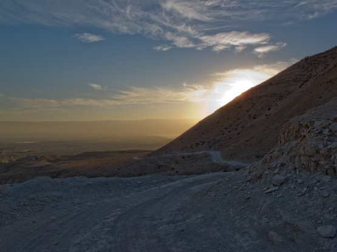
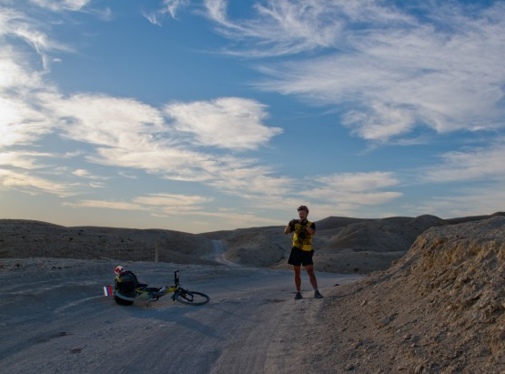
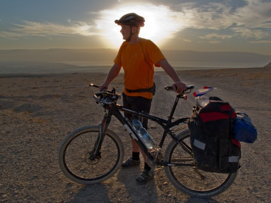
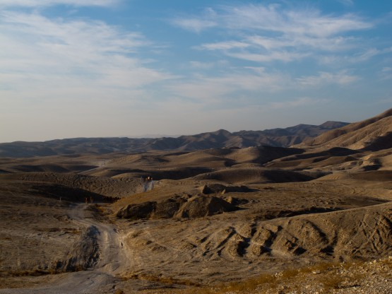
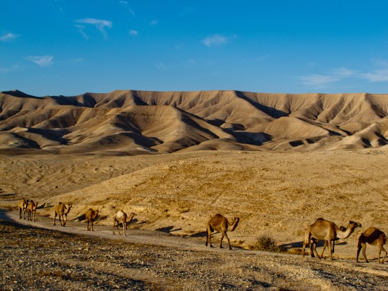
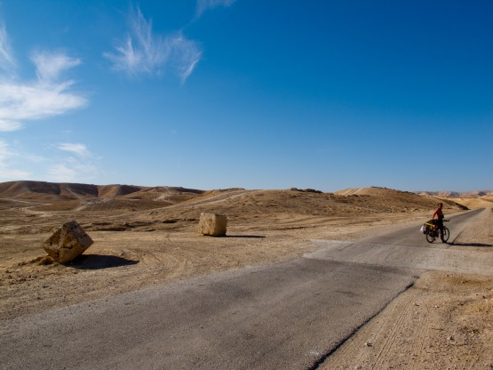
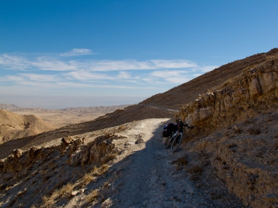
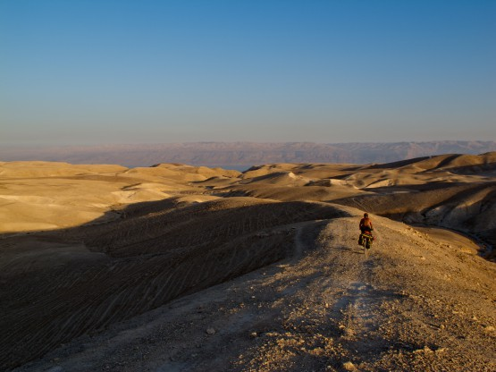
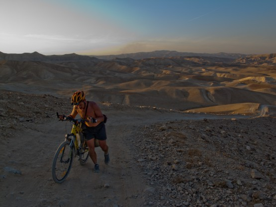

Пятый день ВелоХануки.
В 4 утра мы не встали, провалялись аж до 5.  План этого дня состоял в посещении монастыря Мар Саба, а после этого максимально продвинуться на юг в сторону Мецукей Драгота и даже немного дальше. Сложность, как нам казалась, состояла в наборе высоты по грунтовкам. Оказалось, что набор высоты это не так уж и страшно, то ли мы втянулись, то ли грунтовки там действительно простые, но проехали мы их без особых напрягов.
План этого дня состоял в посещении монастыря Мар Саба, а после этого максимально продвинуться на юг в сторону Мецукей Драгота и даже немного дальше. Сложность, как нам казалась, состояла в наборе высоты по грунтовкам. Оказалось, что набор высоты это не так уж и страшно, то ли мы втянулись, то ли грунтовки там действительно простые, но проехали мы их без особых напрягов.
Утро нового дня.

Не торопимся, много фотографируем.

Утреннее солнце к тому располагает

Дороги не сложные

Но трафик присутствует

Выехали на относительно плоский участок - военный полигон. Много рвов, окопов и следов от танков не оставляли сомнений в предназначении этой местности. Оставалось надеяться, что в воскресенье стрельб не бывает (в субботу точно нет, а вот в воскресенье я не уверен. . . ). Несколько километров проехали по асфальту. Интересно, что на дороге есть специальные места для пересечения гусеничной техникой, они бетонированные и обозначены бетонными блоками - грамотно.

Дальше наш путь опять лежал вверх, причем Андрей даже одел рюкзак за спину, а я пожалел, что не сделал так же. В верхней точке этого участка нас ждали развалины древнего укрепления, некогда перекрывавшего этот перевал. Если подняться по серпантину еще выше, то можно наблюдать сохранившийся мозаичный пол стоявшего там ранее строения. Интересное место, жаль, что ничего не знаем про него.
Далее по шикарному синглу, преодолев еще несколько подъемов выехали на джиповку и таки встретили джип с еврейской семьей. Дальше вплоть до Мар Сабы периодически обгоняли их. Получается, что наша скорость движения по грунтовкам примерно равна автомобильной, хотя глядя на статистику дня в это трудно поверить.
Сказочно красивый сингл

Вот и Мар Саба

Да, такие виды на долго остаются в памяти, хочется смотреть и никуда не уходить с этого места, но ограничиться только созерцанием монастыря через ущелье Кедрон мы все равно не могли. Вода купленная на заправке Паз подходила к концу, а до Мецукей Драгота минимум пол дня. Делать нечего полезли вниз ущелья, предварительно выкатив велики на крутой склон, чтобы их было видно.
Спуск по сыпучим камням в контактной обуви занимает несколько больше времени, постоянно нужно думать о том, как поставить ногу, чтобы не опереться на шип. В отчетах джиперов читал, что им приходилось перепрыгивать ручей по камням, но к нашей радости на тропе стоял свежеокрашенный белой краской металлический мост.
Это хорошо, так как перспектива ухнуть в канализационный Кедрон мне не очень нравилась. Дело в том, что Кедрон, который начинается от Иерусалима, проходит мимо арабского Вифлеема и там в него сливают прямо-таки неочищенную канализацию, запах и вид у него соответствует содержанию. Хорошо, что ущелье глубокое и по мере подъема запах практически не ощущается.
Поднялись. Навстречу бежит араб, тычет пальцем в наши велики, лежащие на противоположном склоне ущелья, чего-то хочет, но не понятно чего. Отмахнулись и пошли в монастырь. При входе монах-грек строго спрашивает откуда мы, такие орлы. Россия говорим гордо. Иудеи? Не унимается грек. Да нет православные. Ну, тогда заходите.
Монах звонит в некую железяку, висящую рядом со входом, чем, видимо, оповещает, что в монастыре гости. На этот звук к нам приходит другой монах, который и будет сопровождать нас по монастырю. Проходим во внутренний дворик, нам открывают маленькую часовенку в центре двора, а наши мысли все про воду. Спрашиваем. Приглашают в трапезную, наливают сока, потом кофе. На столе графины с водой и какой-то вкусный мармелад с орехами - угощаемся, спасибо.
Смотрим часовню, грек спрашивает, открыть ли нам Храм - конечно открыть. В храме, под стеклянным колпаком лежат мощи Саввы Преосвященного, основателя этого монастыря. Странно, я вроде читал, что они в часовне. Храм не оставляет сомнений в святости этого места, возможно потому что мы в храме втроем и нет толп туристов, но ощущения не сравнимые с теми которые были у меня, например, в Иерусалиме.
Вместе с монахом выходим на балкон, оттуда прекрасный вид на весь каньон. Монах показывает нам пещеру, в которой жил Саава, оказывается мы прошли совсем рядом с ней, когда спускались по склону. Спрашиваем можно ли здесь набрать воды, он не совсем понимает нас и начинает рассказывать про источник со святой водой у основания скалы, мы показываем наши емкости, улыбается, нет там совсем мало воды. Идемте со мной, говорит, я налью вам воды.
Опять приходим в трапезную, на кухне стоят канистры с водой, она явно привозная. Монах наливает нам 6 бутылок воды. Добрый человек. Спасибо ему. Вы уже, наверное, заметили, что у нас не проходит ни одного дня без встречи с хорошими людьми. Прощаемся и в обратный путь.
На выходе из монастыря нас ждут арабские дети, судя по всему, их послал старший, который подходил к нам перед входом. Детишки подготовленные, говорят по-английски, артистично бросают на землю кепки, тычут пальцами в сторону наших велосипедов, мирно лежащих на противоположном склоне ущелья и требуют денег за то, что смотрели за ними. Не, гусары денег не дают.
Шустро залезли наверх, велики на месте и это хорошо, прощальный взгляд на монастырь и снова в путь. Дальше все время вниз, единственная неприятность это необходимость несколько раз пересечь Кедрон.


Закат встретили на смотровой площадке над мертвым морем. Красивое место. Кстати, опять про Кедрон, где-то читал, что он до мертвого моря не доходит, так вот это не так. Со смотровой площадки отлично видно, что Кедрон благополучно впадает в Мертвое море. Пообедали (скорее поужинали) на площадке и уже затемно тронулись, но ехать не хотелось совсем. Вскоре поставили палатки и завалились спать. До Мецукей Драгота не доехали порядка 10 км. Появилось отставание от графика.
Статистика дня: Проехали: 42.4 km, за время: 12 hours, 26 minutes, 11 seconds, набор высоты: 1155 m, спуск: 990.2 m Трек.